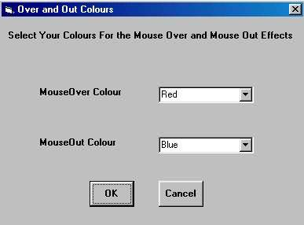

Free
computer Tutorials
|
Free
computer Tutorials
|
|
 HOME
HOME
|
Stay at Home and Learn | ||||
|
Cascading Style Sheets Adding Styles To Your Web Pages |
|||||
|
Adding an Inline Style
The first code we're going to write will cause a hyperlink to change colour when the mouse is moved over it. So start your HTML Editor and do the following:
Inline Style
<HTML> <A Href = ""></A> </BODY>

<A Href = "" onmouseover="this.style.color='Red'"
onmouseout="this.style.color='Blue'"> The text "Click Me Now!" has been added for the link. Add some text for your link, and then save your work. View it in a browser, and test it out by moving your mouse over the hyperlink and moving it away. Of course, the link doesn't work because it was a Blank Hyperlink. But you can easily insert a real link, and apply the Style. Note what the style was in all that code, though: this.style.color= The word "this" doesn't have to be there. It means "this document" and tells the browser exactly which web page you mean. It's used more on the scripting side of things than on the Style side. It could have been shortened to: style.color= With that code, we're changing the behaviour of the Inline A HREF element.
We told the browser what to do when it detects an "OnMouseOver"
event (more on this in the scripting section), and what to do when it
detects an "OnMouseOut" event. What it does is to change the
colour of the text for the link. Test your new link out, and see the results. It should look like the link below. Move your mouse over this link: HTML SelectorsThis next exercise will add some code to your page that switches off
the underline from a hyperlink when the mouse is moved over it. It is
an example of a HTML Selector in action. So, create a new web page in
your Editor and do this:
<STYLE type=text/css> </head> The HTML Selector "A" (for Anchor) is the one that will be changed. The Rule the Editor sets up means that all Anchor links will now have their "Hover" behaviour and their "Link" behaviours changed. The Property that removes the link underline is text-decoration, and the Value that is used is None. Type some text for the link, then save your web page and test it out in a browser. In the next part, we'll see how to change the background colour behind some text
<-- Back One Page Move on to the Next Part --> <--Back to the Style Sheets Contents Page View all our Home Study Computer Courses
|